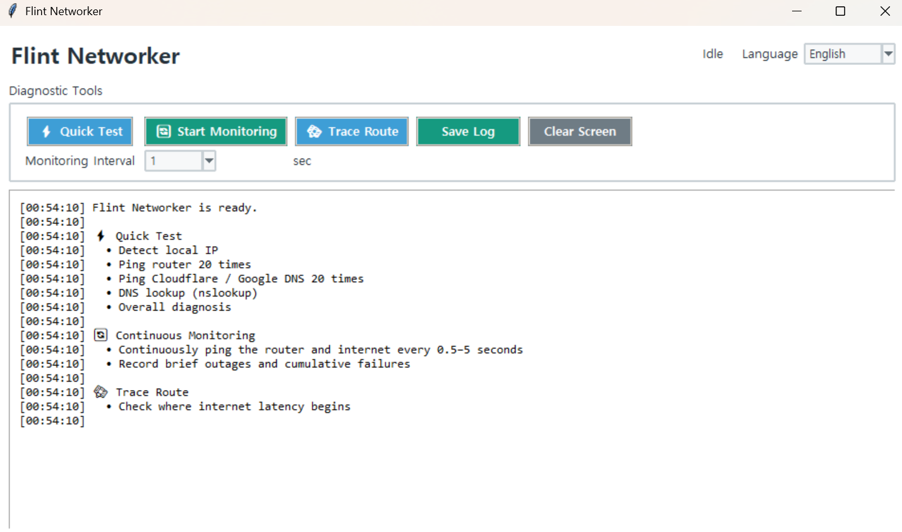

Flint Networker
Version: 1.0.0
Quick Check
- Run the program.
- Click
Quick Check. - When the check is complete, review the overall diagnosis at the bottom.
- If necessary, click
Save Logto save the results.
The Quick Check examines the following:
- Local IP address
- Default gateway
- 20 pings to the router
- 20 pings to Cloudflare and Google DNS
- DNS lookup
- Packet loss and latency
- Overall diagnosis of the problem area
Continuous Monitoring
Use this feature to detect intermittent internet disconnections.
- Select the monitoring interval.
- Click
Start Continuous Monitoring. - Leave the program running until a disconnection occurs.
- Click
Stop Continuous Monitoringwhen you are finished.
The program continuously checks the router and external internet connection while recording the cumulative number of failures.
Traceroute
Click Traceroute to view the network path to the external internet.
Runtime Environment
This tool is Windows-only because it uses the Windows ping, route, nslookup, and tracert commands.
Run:
python networker.py
Note:If you are using the executable (EXE) version, you do not need to run the Python command.